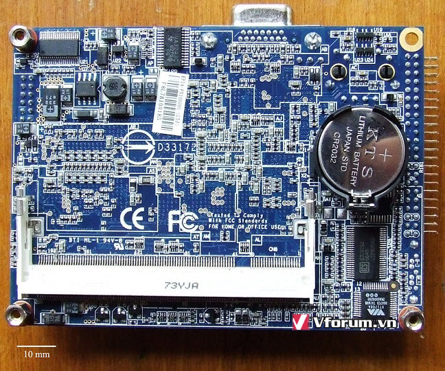
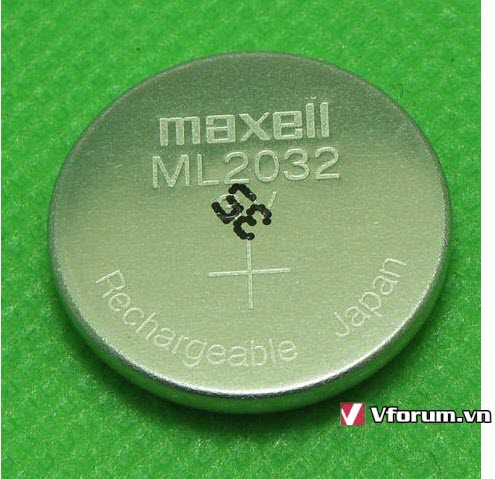
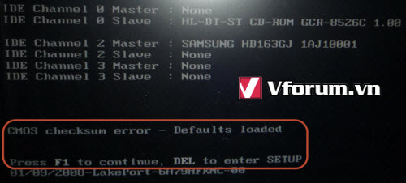
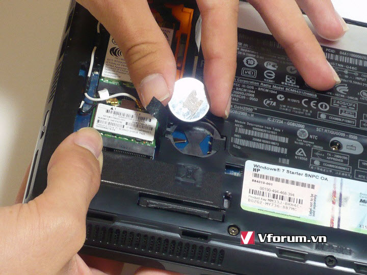
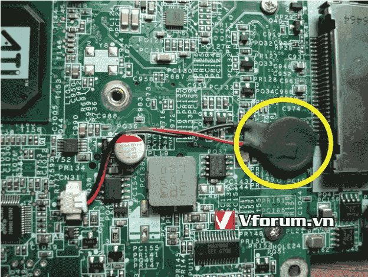

Pin Cmos là gì? Hết pin Cmos máy tính có hoạt động bình thường hay không? Cách thay pin Cmos
Pin Cmos là gì? Hết pin Cmos máy tính có hoạt động bình thường hay không? Cách thay pin Cmos, máy tính thường xuyên bị chạy sai thời gian, khởi động máy tính không lên màn hình, cách sửa lỗi CMOS Checksum error
Bạn thường nghe đến thuật ngữ pin Cmos, vậy nó là cái gì, có ăn được hay không
Mời bạn theo dõi bài viết này để hiểu rõ hơn về pin Cmos trong máy tính máy PC, laptop nhé.
Pin Cmos là gì?
CMOS thực ra là viết tắt của Complementary Metal-Oxide Semiconductor, nó là 1 vi mạch nhỏ (con chip) trên mainboard của máy tính có tác dụng lưu trữ 1 số thông tin kể cả khi mất điện. Để phục vụ cho việc này, các kỹ sư đã thiết kế ra 1 viên pin nho nhỏ, gắn trên main để duy trì thông tin bất kể máy tính có được cấp nguồn điện hay không. Điểm đặc biệt là con chip này tiêu tốn rất rất ít điện, vì vậy kích thước của viên pin CMOS khá nhỏ, và sử dụng trong vài năm mới hết.

Tác dụng của Pin Cmos là gì?
Pin Cmos có 1 tác dụng chính duy nhất là cung cấp năng lượng cho chip cmos hoạt động bình thường. Thông tin lưu trong CMOS gồm chạy giờ, ngày tháng năm và 1 số thông tin về phần cứng để trước khi khởi động thì main sẽ lấy thông tin ra sử dụng 1 cách nhanh nhất. Ví dụ như: thứ tự Boot các ổ cứng, DVD hay USB trước, kích hoạt hoặc tắt các cổng USB, password cho BIOS, …

Hết pin CMos có ảnh hưởng gì không?
Nhiều bạn sẽ thắc mắc là nếu viên pin này cạn điện đã lâu và mình không phát hiện sớm thì có làm sao không.
Câu trả lời đơn giản là máy tính của bạn vẫn có khả năng khởi động và vào hệ điều hành 1 cách bình thường. Khi mới bật máy ở màn hình nền đen chữ trắng (BIOS) thì bạn phải nhấn F1 hoặc F2/Delete để vào setup hoặc tiếp tục với cài đặt BIOS tốt nhất từ trước đó. Và 1 điều nữa là ngày giờ bị sai thì khi bật mở trình duyệt sẽ không truy cập được vào các trang được mã hoá SSL.

Thay pin CMOS chính là cách để sửa lỗi CMOS Checksum error triệt để và đúng bài nhất
Cách thay pin CMOS cho máy tính PC laptop
Với máy bàn thì khá dễ dàng, bạn chỉ việc mở tấm nắp của case thì thấy ngay 1 viên pin dạng cúc áo có mã CR2032 mạ màu sáng loáng rất đẹp mắt.
Bước 2: Đặt đầu tua vít hoặc cái nhip vào thanh đàn hồi đang cài giữ pin, là nó tự bật lên.
Bước 3: Gỡ viên pin cũ ra khỏi main, dùng đầu tua vít cọ nhẹ nhẹ 2 thanh tiếp điện để làm sạch bề mặt tiếp xúc với pin mới
Bước 4: Tháo pin mới khỏi vỏ giấy, đặt đúng cực (mặt có chữ dấu + quay lên trên) thả vào khay pin, nhấn nhẹ nghe tách 1 cái là được.
Có ngắt điện lúc thao tác hay không là không quan trọng lắm.

Với laptop thì việc vặn ốc sẽ nhiều hơn và cần chút ít kinh nghiệm để phán đoán xem pin CMOS nằm ở nắp nào Pin của laptop vẫn là dạng pin này, nhưng hay có thêm vỏ nilon và chân cắm điện với 1 cực.

Nguồn: vforum.vnCần nạp mực hoặc sửa máy in tận nơi? Mực In Trường Phát có mặt trong 30 phút tại TP.HCM — in test trước khi tính tiền, bảo hành 1 tháng.
0908.327.123 · 0819.007.394 (Zalo cả 2 số)